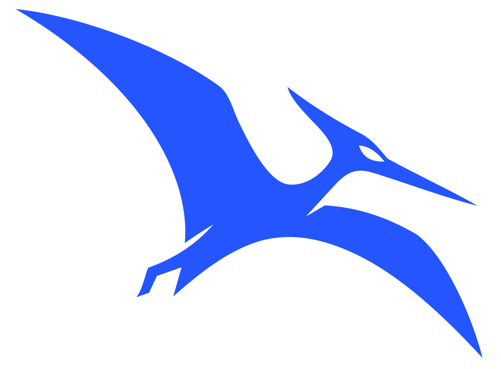

Highlighted ranking
Six synthetic values; one focus bar. Portrait size tests the publication signature.
Local study / 01 October 2026 / proposal only
Earlier reference and palette trials remain here for comparison. Work Sans and #2455FF are confirmed. The current direct R chart-frame and warm-accent study is here. None of this enters the published website.
01 / Symbol development
The untouched raster is shown beside two transparent, flat-fill SVG interpretations. The long beak, rearward crest, curved wings, and feet remain part of the silhouette.

Each circle is the stated CSS pixel size. The mark sits inside the circular safe area; the footer sample uses the same SVGs at 24 px wide. The compact trial follows the observed loss of eye and feet in the first two versions at 24 px.
Original sampled blue, proposed blue, raspberry, black, and reversed white. No gradients or embedded bitmap.
02 / Archived identity application
Work Sans is now the sole approved family and #2455FF is confirmed blue. The earlier alternatives below remain as an archive. Markos Tsinganis appears only as a secondary website credit, never in the chart footer or avatar.
03 / Data color system
Frozen trial values separate highlights, neutral context, categories, ordered intensity, and signed deviation. Twelve and sixteen categories are stress tests, not a recommendation to rely on color alone.
WCAG ratios are calculated against paper and white. The table distinguishes normal text (4.5:1) from chart marks and large text (3:1). Labels and strokes remain necessary where marks blend into the ground.
| Color / role | Paper #F7F5EE | White #FFFFFF | Ink #172033 | Use |
|---|
Closest pair in each set by Oklab distance after full-severity simulation. Smaller numbers indicate more similar colors; they are not accessibility pass/fail thresholds.
| Set | Standard | Protanopia | Deuteranopia | Tritanopia | Grayscale |
|---|
Use darker categorical variants or pair light series with a dark outline. Stroke at least 2.5 px in these mockups. Direct labels and differing dash patterns carry meaning when hues converge.
Allow lighter tints when the value is read from labels or a legend. Separate adjacent fills with a paper or ink border. Sequential steps follow increasing perceptual lightness contrast.
Use ink on paper for body copy and data labels. Raspberry, lime, and several chart colors fail normal-text contrast on paper; reserve them for shapes and use ink text over light fills.
04 / Synthetic application tests
All values below are invented for this visual test. Select a color proposal and a simulated viewing condition. The data, layout, annotations, and chart footer stay identical.
Simulation is an approximation, not a substitute for testing with people.
Six synthetic values; one focus bar. Portrait size tests the publication signature.
Direct end labels and dash patterns help distinguish close colors.
Stress test: numeric keys accompany every colored item.
Eight synthetic components over four periods, with labels beside the stack.
Ordered 0–100 values. Each cell carries its number.
Invented regions and deviations; not real geography. Signed values label each region.
05 / Review notes
The faithful vector is the recommended starting point for wordmarks and larger placements. At 24 px its eye and feet weaken, so the compact trial enlarges both details while keeping the same wing, crest, and beak silhouette. The middle variant remains useful around 32–48 px.
Both blues feel closer to the supplied identity. Raspberry is a useful contrasting direction, but its vibrancy does not make it readable as small text on paper. Lime is decorative only.
The 12/16-color extensions contain near neighbors, especially in simulated color-vision conditions. Prefer grouping, facets, direct labels, texture, or fewer categories for finished analytical charts.
Palette rationale and provenance are documented in the study notes. This is a proposal, not an approved brand or a production chart template.